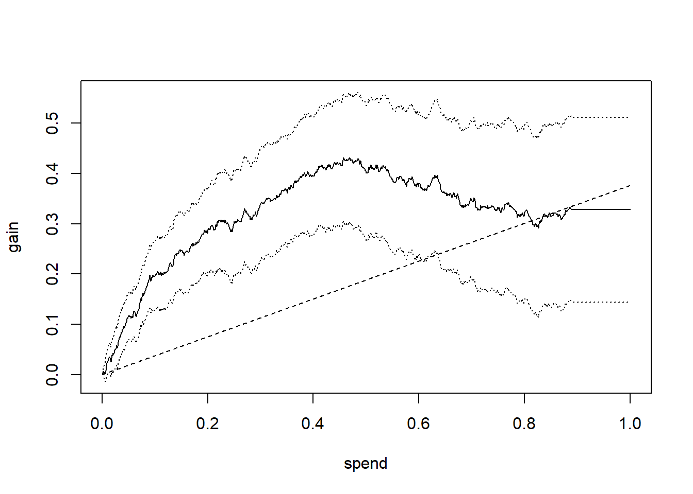
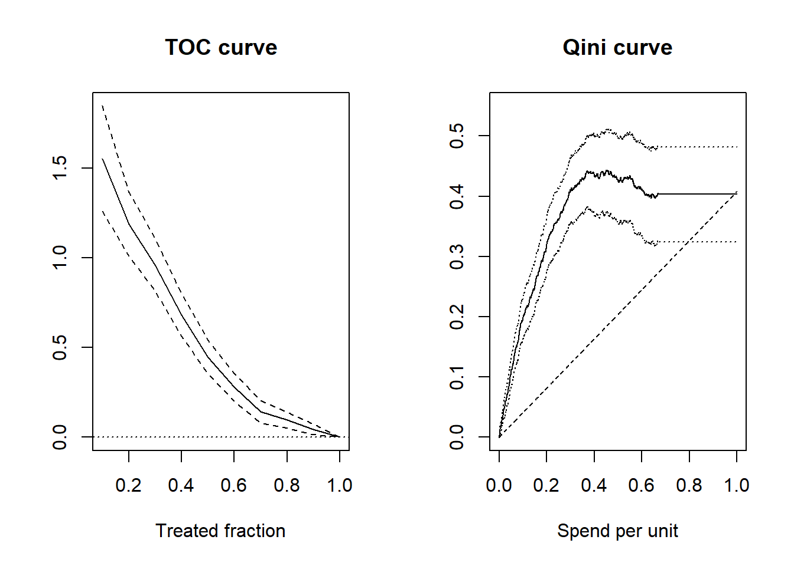
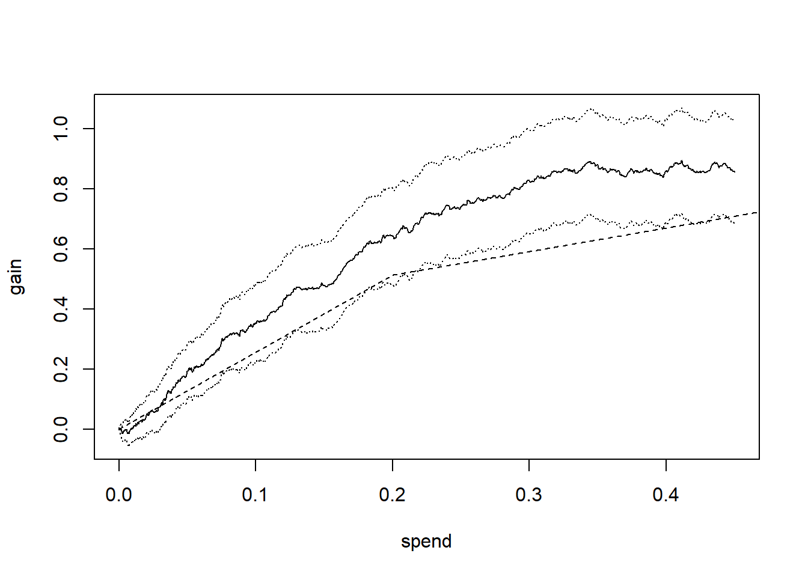
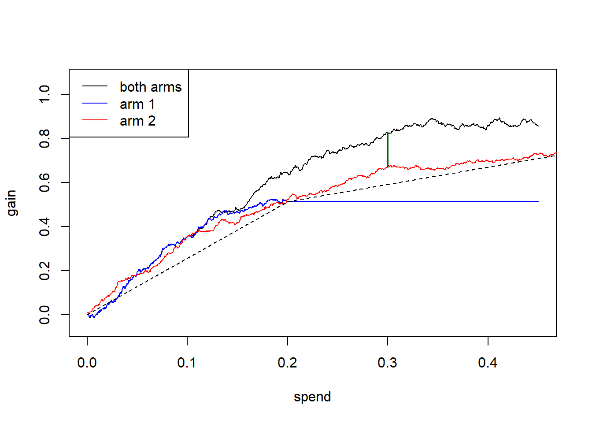
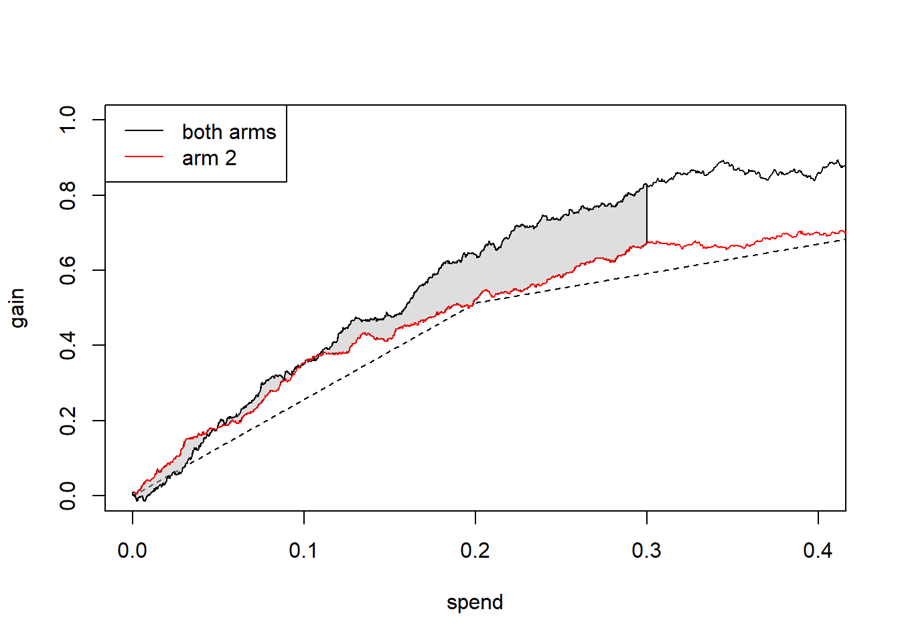

library(grf)
library(maq)Qini 曲线：自动化的成本效益分析
Qini curves: Automatic cost-benefit analysis · grf 官方教程中译
来源：R 包 grf 官方教程
maq.Rmd（原文渲染版），作者 Julie Tibshirani、Susan Athey、Erik Sverdrup、Stefan Wager 等，采用 GPL-3 许可。 本页为中文翻译，非原文；按 GPL-3 保留原作者署名与许可证，并标明这是修改（翻译）后的版本。 译自 grf 2.6.1（源码修订5bee99b）。 页内代码与图表由本站以 R 4.4.3 + grf 2.6.1 重新执行生成，因随机种子与包版本差异，数值可能与原站略有出入。
本文简要介绍：当实施处理需要付出成本时，Qini 曲线（或称成本曲线）如何成为评价处理规则的一个有吸引力且直观的指标，以及它如何推广到多个处理臂——这一推广实现在配套包 maq 中。完整细节请参见这篇论文。
用估计的 CATE 推导处理分配策略
在进入 Qini 曲线之前，先约定一些术语、复习几个概念。设二值处理分配 \(W_i = \{0, 1\}\)，以及我们关心的结局 \(Y_i\)。为了判断人群中是否存在某些由可观测特征 \(X_i\) 定义的亚组，其从处理分配中获得的收益各不相同，我们关心的核心对象是条件平均处理效应（CATE）
\[\tau(X_i) = E[Y_i(1) - Y_i(0) \,|\, X_i = x],\]
其中 \(Y_i(1)\) 和 \(Y_i(0)\) 是对应两种处理状态（处理臂或对照臂）的潜在结果。
估计函数 \(\tau(X_i)\) 的方法有很多，因果森林（Causal Forest）是其中之一。那么，当我们在某个训练集上得到了估计的 \(\hat \tau(\cdot)\) 函数之后，可以在留出的测试集上用什么指标来评价它？这取决于我们的使用场景。很多时候，我们希望用 \(\hat \tau(\cdot)\) 来指导处理分配。估计得到的 CATE 函数 \(\hat \tau(\cdot)\) 隐含地给出了一族策略，记作 \(\pi(\cdot)\)：它接受协变量 \(X_i\)，并把它们映射到一个处理决策 \(\{0: \text{不处理}, 1: \text{处理}\}\)。例如，我们可能资源有限，决定最多只处理 10% 的个体。把处理分配给预测收益最高的那 10% 个体，对应的策略是
\[ \pi(X_i) = \begin{cases} 1,& \text{若 CATE 预测值 } \hat \tau(X_i) \geq \text{排名前 10%}\\ 0, & \text{否则}. \end{cases} \] 这个策略的价值是 \(E[\pi(X_i) (Y_i(1) - Y_i(0))]\)，对应的策略可以表述为一条简单的优先级规则：对预测处理效应高于某个阈值的个体施加处理。该策略价值满足中心极限定理，也就是说，即使用来决定处理分配的底层函数 \(\hat \tau(\cdot)\) 来自复杂的「黑箱」机器学习算法，我们仍然可以得到这个策略在真实世界中部署后表现的估计和置信区间。
Qini 曲线：在多个决策阈值上评价策略
为了叙述更一般，现在考虑施加处理需要付出成本的情形：用 \(C_i(1)\) 表示把个体 \(i\) 分配到处理臂的成本（并假设不施加处理没有成本，\(C_i(0)=0\)）。成本因个体而异的一个例子是接种疫苗：把药品送到远离医疗中心的人手中，通常比送到住得近的人手中成本更高。成本不一定是货币成本，也可以刻画更抽象的东西，比如负外部性。
现在的问题是：给定预算 \(B\)，用什么办法来量化按估计的 CATE 施加处理时的成本—收益权衡？结果表明，把成本纳入上一节勾勒的策略评价框架非常直接。
回忆一下，策略 \(\pi(X_i)\) 是把协变量 \(X_i\) 映射到处理决策的函数，\(\pi(X_i) \in \{0: \text{不处理}, 1: \text{处理}\}\)。在本节中，这个函数会依赖预算 \(B\)，我们用下标写成 \(\pi_B(X_i)\)。结果表明，和上一节一样，这个策略也可以表述为一条处理优先级规则，它本质上是说「如果你有 \(B\) 可以花，那么当 Alice 估计的成本收益比（CATE/成本）高于某个临界值时就处理她」，对 Bob 等人也同理。如果 Alice 估计的 CATE 是负的，我们就不会考虑处理她，因为那样既要付出成本，又会降低收益。
我们有一个测试集用于评价，其中有 \(n\) 个观测到的结局和处理分配。我们想量化的是：在不同的支出水平 \(B\) 下，按 \(\pi_B\) 施加处理所能获得的期望收益（用 ATE 度量）。
上一节我们略过了如何评价一个策略的具体细节。幸运的是，这件事很简单：只要知道处理的随机化概率，就可以用逆倾向加权（IPW），对与策略处方相符的测试集结局之差取平均，来估计我们获得的收益值：
\[ \frac{1}{n} \sum_{i}^{n} \pi_B(X_i) \left( \frac{W_i Y_i}{P[W_i = 1|X_i]} - \frac{(1-W_i)Y_i}{P[W_i = 0|X_i]} \right). \] IPW（括号中的部分）考虑了这样一个事实：对个体 i 而言，策略给出的处方 \(\pi_B(X_i)\) 未必与观测到的处理 \(W_i\) 一致。Qini 曲线在可用预算 \(B\) 变化时描出上面这个值，从而给出下式的估计
\[ Q(B) = E[\pi_B(X_i) (Y_i(1) - Y_i(0))] = E[\pi_B(X_i) \tau(X_i)], \] 也就是在不同预算 \(B\) 取值下，按估计的 CATE 和成本施加处理所能获得的收益；这里预算约束是平均发生成本 \(E[\pi_B(X_i) (C_i(1) - C_i(0))]\) 不超过 \(B\)。
下面的代码给出一个玩具示例。为了让叙述简单，我们假设每个个体的成本相同：按某种选定的计量单位，处理 Bob 和处理 Alice 的成本都是 1.0（Qini 作为评价指标的一个好性质是，它不要求成本和处理效应用同一尺度计量，只有二者的比值才重要）。
n <- 2000
p <- 5
X <- matrix(rnorm(n * p), n, p)
W <- rbinom(n, 1, 0.5)
Y <- pmax(X[, 1], 0) * W + X[, 2] + pmin(X[, 3], 0) + rnorm(n)
# 1) Train a CATE function on training set.
train <- sample(n/2)
c.forest <- causal_forest(X[train, ], Y[train], W[train])
# 2) Predict CATEs on test set.
test <- -train
tau.hat <- predict(c.forest, X[test, ])$predictions
# 3) Estimate a Qini curve using inverse-propensity weighted test set outcomes.
IPW.scores <- ifelse(W[test] == 1, Y[test]/0.5, -Y[test]/0.5)
# Assume each unit incur the same cost.
cost <- 1
# Use the maq package to fit a Qini curve, using 200 bootstrap replicates for SEs.
qini <- maq(tau.hat, cost, IPW.scores, R = 200)
# Form a baseline Qini curve that uses the ATE rather than the CATE to assign treatment.
qini.baseline <- maq(tau.hat, cost, IPW.scores, target.with.covariates = FALSE, R = 200)
plot(qini, xlim = c(0, 1))
plot(qini.baseline, add = TRUE, lty = 2, ci.args = NULL) # leave out CIs for legibility.
实线表示：随着我们愿意在每个个体上花费的金额增加（x 轴），把处理分配给预测中每单位支出收益最大的个体后得到的期望收益（y 轴），并带有 95 % 置信区间的误差棒。虚线表示不考虑 CATE 分配处理时的 Qini 曲线，也就是说，在这条线的末端，预算已经用尽、所有人都得到了处理，此时收益等于 ATE，为 0.38。（因此，虚线上的点表示在不同支出水平下，针对人群中任意一组个体所能期望得到的 ATE 的比例，所以它不一定是一条 45 度线）
黑色实线是 Qini 曲线，它用估计的 CATE 来预测测试集中哪些对象每单位支出的处理效应最高。这条曲线明显高于「忽略」CATE 的那条虚直线，说明按估计的 CATE 把处理定向到每单位支出反应最敏感的子人群是有好处的。曲线在 \(B=\) 0.89 处停止（或者说「进入平台」），因为到这一点为止，我们已经把处理分配给了所有预测有收益、即 \(\hat \tau(X_i) > 0\) 的个体。
我们可以通过下面的方式，读出曲线在不同 \(B\) 处的估计值
average_gain(qini, spend = 0.2)
#> estimate std.err
#> 0.288 0.044也就是说，在平均支出 \(B=0.2\) 时，每个个体平均收益的 95% 置信区间是 0.29 \(\pm\) 0.09。（这些标准误是在给定估计函数 \(\hat \tau(\cdot)\) 的条件下得到的，量化的是估计 Qini 曲线时的测试集不确定性。）
如果我们把同样多的预算用来处理人群中任意一组个体，估计收益会是
average_gain(qini.baseline, spend = 0.2)
#> estimate std.err
#> 0.075 0.019关于策略评价的说明： 凡是 IPW 能解决的问题，一般都存在一个统计效能更好的双稳健方法（这里是 Augmented-IPW）。为简单起见，本文仍用 IPW 来评价；但要知道，用 GRF 你可以在测试集上单独训练一片森林，通过函数 get_scores(forest) 取得双稳健的测试集得分，用它替代 IPW.scores，就能得到 Qini 曲线的双稳健估计。
补充：Qini 曲线与 TOC 曲线的比较
到目前为止，我们介绍了两条曲线，它们看起来用途相似。区别在哪里？这取决于应用场景。仔细看会发现，哪条曲线有用，取决于我们关心什么问题。下面并排展示：当 ATE 为正、但人群中既有处理效应为正的亚组、也有处理效应为负的亚组时，TOC 曲线和 Qini 曲线大致长什么样（Qini 图中的虚线代表 ATE）。

TOC 把按某个打分规则划分的分位数上的平均处理效应，与总体平均处理效应作比较。Qini 曲线量化的是：当每个个体的支出预算约束变化时，每个个体的平均处理效应。
所以：如果你关心的是人群中是否存在一部分人从处理中获益高于平均，那么 TOC 曲线有用。如果成本并不直接相关，你更想检测是否存在异质性，那么 TOC 会有帮助，因为它能清楚地显示出在哪个分位数上定向处理是有效的。因此，TOC 是度量异质性的通用工具。
如果你所处的场景自然需要做成本—收益分析，那么 Qini 曲线有用。Qini 曲线的好处是，它能清楚地显示：在不同的可用预算水平下，把处理定向到反应最敏感的个体后，每单位支出所能获得的期望收益。Qini 曲线的另一个好处是，它更自然地推广到多个处理臂，因为成本这一要素带来的成本—收益权衡是类似的，只不过现在要同时跨处理臂和个体来权衡。
关于常数成本的说明： 对单个处理臂，当每个个体的成本相同、即 \(C_i(X_i) = 1\) 时，上面 Qini 曲线图的 x 轴也可以解读为接受处理的比例。
多臂处理下的 Qini 曲线
现在考虑这样的情形：我们有 \(k = 0,\ldots K\) 个可用的处理臂，其中 \(k=0\) 是零成本的对照臂。例如，\(k=1\) 可以是一种低成本药物，\(k=2\) 可以是一种成本更高、但更有效的药物（而 \(k=0\) 可以是安慰剂对照）。
给定估计的处理效应 \(\hat \tau(\cdot)\) 和成本 \(C(\cdot)\)（注意这些对象现在是向量值的，即 \(\hat \tau(X_i)\) 的第 \(k\) 个元素，是协变量取值为 \(X_i\) 的个体在第 \(k\) 个臂上的 CATE 估计1）——现在要问：如果预算可变，我们该如何做与上面类似的分析，即评估按照估计的 CATE（以及成本）最优分配处理的效果？
事实证明，要做这件事需要求解一个约束优化问题，因为背后的策略对象 \(\pi_B(X_i)\) 现在必须为每个个体在多个候选臂（成本各不相同）之间做最优选择。例如，在每个支出水平上，我们都要决定：是给 Alice 分配某个初始臂，还是——如果 Bob 已经分到了某个臂——把 Bob 升级到成本更高、但更有效的臂。
maq 包可以高效地完成这件事（它用一个专门的算法计算解路径）。这里我们直接看一个玩具例子，其中有 2 个处理臂和 1 个对照臂。我们模拟一个简单的情形：其中一个处理臂（第 2 个）平均而言更有效，但成本更高。设想把任一个体分配到第一个臂的成本是 0.2（以某种选定的计价单位衡量），把每个个体分配到第二个臂的成本是 0.5（成本也可以随个体的某些已知特征而变化，这时可以给下面的 cost 参数传入一个矩阵）。
# Simulate two treatment arms (1 and 2) and a control arm 0.
n <- 3000
p <- 5
X <- matrix(runif(n * p), n, p)
W <- as.factor(sample(c("0", "1", "2"), n, replace = TRUE))
Y <- X[, 1] + X[, 2] * (W == "1") + 1.5 * X[, 3] * (W == "2") + rnorm(n)
# 1) Train a CATE function on training set.
train <- sample(n/2)
c.forest <- multi_arm_causal_forest(X[train, ], Y[train], W[train])
# 2) Predict CATEs on test set.
test <- -train
tau.hat <- predict(c.forest, X[test, ], drop = TRUE)$predictions
# 3) Form a multi-armed Qini curve based on IPW (convenience function part of `maq`).
IPW.scores <- get_ipw_scores(Y[test], W[test])
# The cost of arm 1 and 2.
cost <- c(0.2, 0.5)
# A Qini curve for a multi-armed policy.
ma.qini <- maq(tau.hat, cost, IPW.scores, R = 200)
# A "baseline" Qini curve that ignores covariates.
ma.qini.baseline <- maq(tau.hat, cost, IPW.scores, target.with.covariates = FALSE, R = 200)多臂策略的 Qini 曲线如下
plot(ma.qini)
plot(ma.qini.baseline, add = TRUE, lty = 2, ci.args = NULL)
虚线代表的 Qini 曲线，只根据 tau.hat 的均值把处理分配到各个臂。这条曲线在 \(B=0.2\) 处有一个折点：第一段刻画的是低成本臂的 ATE，第二段刻画的是成本更高、但平均而言更有效的那个臂的 ATE。这条曲线上的点，表示对任意一组个体投放处理时的人均收益2。
实线给出的是另一种策略的 Qini 曲线估计：这种策略利用 tau.hat 和 cost，在给定支出下把处理臂分配给预测中成本收益最高的个体。估计虚线与实线之间的差距，就可以评估用两个臂做定向投放相对于随机分配处理的价值。例如，在 \(B=0.3\) 处，这段垂直距离是
difference_gain(ma.qini, ma.qini.baseline, spend = 0.3)
#> estimate std.err
#> 0.235 0.049通过 predict 可以取回背后多臂策略 \(\pi_B\) 的估计，例如在 \(B=0.3\) 处
pi.hat <- predict(ma.qini, spend = 0.3)
head(pi.hat)
#> [,1] [,2]
#> [1,] 1 0
#> [2,] 1 0
#> [3,] 1 0
#> [4,] 1 0
#> [5,] 0 1
#> [6,] 0 0\(\pi_B(X_i)\) 现在是一个 \(K\) 维向量，即上面第 \(i\) 行的第 \(k\) 列取 1，表示在该支出水平上给这个个体分配第 \(k\) 个臂；如果分配的是对照臂，则该行各项全为零。3
我们也可以为每个臂分别计算 Qini 曲线，从而与单臂处理策略作比较。
qini.arm1 <- maq(tau.hat[, 1], cost[1], IPW.scores[, 1], R = 200)
qini.arm2 <- maq(tau.hat[, 2], cost[2], IPW.scores[, 2], R = 200)
plot(ma.qini, ci.args = NULL) # leave out CIs for legibility.
plot(qini.arm1, add = TRUE, col = "blue", ci.args = NULL)
plot(qini.arm2, add = TRUE, col = "red", ci.args = NULL)
plot(ma.qini.baseline, add = TRUE, lty = 2, ci.args = NULL)
legend("topleft", c("both arms", "arm 1", "arm 2"),
col = c("black", "blue", "red"), lty = 1)
蓝线（臂 1）在支出水平约为 0.2 处变平，因为到了这个支出水平，我们已经把处理给了所有被认为能从臂 1 获益的个体（即 \(\hat \tau_1(X_i) > 0\)），再增加支出也无法带来更多收益。
单臂处理规则的 Qini 曲线，可以帮助评估用某个特定的臂或某个定向函数做投放的价值。多臂 Qini 的推广让我们能回答这样的问题：“在某个特定支出水平上，用两个臂做最优定向投放，相比只用一个臂，收益的估计增量是多少？”。记 \(\hat Q(B)\) 为多臂策略的 Qini 曲线估计，\(\hat Q_2(B)\) 为臂 2 的 Qini 曲线估计。在 \(B = 0.3\) 处，差值 \(\hat Q(B) - \hat Q_2(B)\)（即上图中那条绿色竖线）是
difference_gain(ma.qini, qini.arm2, spend = 0.3)
#> estimate std.err
#> 0.154 0.073在这个例子中，多臂策略给测试集中的每个个体分配成本收益最高的处理，因此比臂 1 的策略取得了更大的收益（这个函数可以比较任意曲线上的点，给出的配对标准误会考虑在同一测试数据上拟合的各条 Qini 曲线之间的相关性）。
我们还可以在一段支出水平范围内比较不同的定向策略。函数 integrated_difference 用来估计两条 Qini 曲线之间的面积。下图中阴影区域的估计（即积分 \(\int_{0}^{0.3} \left(Q(B) - Q_2(B)\right)dB\)）

由下式给出
integrated_difference(ma.qini, qini.arm2, spend = 0.3)
#> estimate std.err
#> 0.0087 0.0575参考文献
Sverdrup, Erik, Han Wu, Susan Athey, and Stefan Wager. Qini Curves for Multi-Armed Treatment Rules. Journal of Computational and Graphical Statistics, 2025. (arxiv)
Yadlowsky, Steve, Scott Fleming, Nigam Shah, Emma Brunskill, and Stefan Wager. Evaluating Treatment Prioritization Rules via Rank-Weighted Average Treatment Effects. Journal of the American Statistical Association, 120(549), 2025. (arxiv)
在单臂情形下估计 CATE 的方法有很多；只要对不同的处理臂分别拟合各自的 CATE 函数，这些方法都可以用到多臂情形。在本文中，我们使用 GRF 的
multi_arm_causal_forest，它对各个臂联合估计处理效应。↩︎当处理臂较多时，这种“基准”臂分配方式，会在“平均”成本与 \(\hat \tau(X_i)\) 构成的平面上刻画出左上方的凸包。↩︎
注意在这个行矩阵中，最多只有一个个体会出现非整数取值。如果给定的预算不足以给最后第 \(i\) 个个体分配处理，那么这个个体要么只有一项分数取值，要么有两项，取决于它是被分配一个初始臂，还是被升级到成本更高的臂。这些分数可以解释为分配到相应臂的概率。↩︎